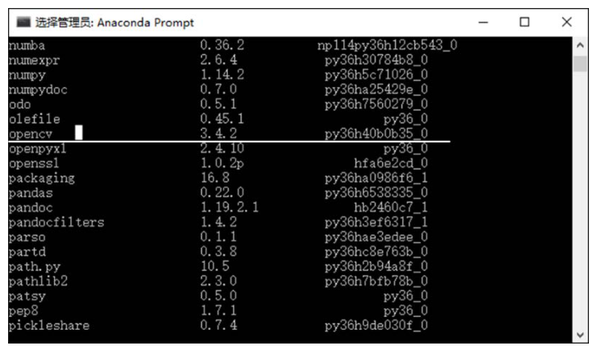
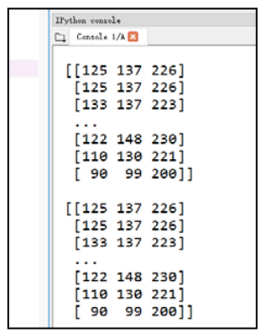
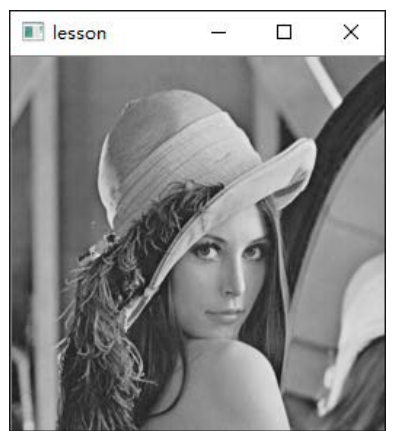
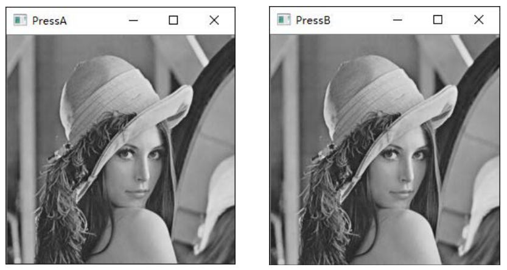

第 1 章 OpenCV 入门#
本章解决：OpenCV 是什么、凭什么用它——开源计算机视觉库的定位与历史（章首）；环境怎么配（1.1）；以及图像处理最基本的三件事：读取、显示、保存（1.2）。 承上启下：本章打通"读 → 显 → 存"的最小闭环，从此图像在 Python 里就是一个 numpy 数组——第 2 章起的像素处理、通道、ROI……全部围绕这个数组展开；1.3 节的贡献库则埋了个伏笔，第 23 章人脸识别用到的 face 模块就来自那里。
OpenCV 是一个开源的计算机视觉库，1999 年由英特尔的 Gary Bradski 启动。Bradski 访学时注意到，很多优秀大学的实验室里都有一套完备的内部视觉接口，从一届学生传给另一届学生——新人直接用接口，比重复造轮子方便得多。OpenCV 正是基于"为计算机视觉提供通用接口"这个目标策划的。
为什么是英特尔（硬件厂商）而非软件厂商来开发它？因为要用视觉库，用户就得买更快的 CPU——这无疑会提升英特尔的销量。如今 OpenCV 已开源并由基金会支持，研究主力早已不限于英特尔，全球用户都在为它做贡献。
| 关键词 | 事实 |
|---|---|
| 出生 | 1999 年，英特尔，Gary Bradski 发起 |
| 底层 | C / C++ 编写，可在多种操作系统上运行 |
| 规模 | 覆盖计算机视觉各领域的 500 多个函数 |
| 心法 | 当黑盒用：像用 PhotoShop——专注图像处理本身，不抠算法实现细节 |
| Python 接口 | import cv2（改善版 API，面向对象；区别于旧版面向过程的 cv 模块，见 §1.2.1 侧栏） |
图像处理的最小流程只有四步，本章就把这条链完整走通：
flowchart LR
A["① 读取图像<br/>cv2.imread"] --> B["② 处理图像<br/>本章用灰度化客串<br/>第 2 章起才是主体"]
B --> C["③ 显示图像<br/>imshow + waitKey"]
C --> D["④ 保存图像<br/>cv2.imwrite"]运行环境约定
本章所有代码引用本目录根下的素材（picture1.jpg 等），路径写作相对路径 picture1.jpg。运行时工作目录需为 数字图像处理-python 根目录，否则 imread 读不到图（详见 §1.2.2 的 (-215) 错误与"坑与陷阱"第 2 条）。拿不准时先 print(os.getcwd()) 确认。
1.0 本章导图#
1.1 如何使用：Python、Anaconda 与 OpenCV 的安装#
书里选 Anaconda 作为开发环境，配置分三步：装 Python 3 → 装 Anaconda → 装 OpenCV。前两步去官网（python.org、anaconda.com）按"操作系统 + 处理器位数"选对应安装包即可；OpenCV 有两种装法：
- 官方途径：从 OpenCV 官网下载安装包，编译后使用——折腾；
- PyPI 预编译包（书的选择，也是如今的标准做法）：直接
pip install，一行搞定。
pip install opencv-python # 只装主库（本书大部分章节够用）
pip install opencv-contrib-python # 主库 + 贡献库（1.3 节），二选一即可
装完验证：Anaconda Prompt 里 conda list 能看到 opencv 及版本号，就说明安装成功；更直接的办法是让 Python 亲口报版本：

# ===== 1.1 验证安装：能 import、能报版本，就说明装好了 =====
import cv2
print(cv2.__version__) # 例如 4.10.0；报 ModuleNotFoundError 才是没装上
两个小提醒
- 模块名是
cv2，不是opencv：import opencv会直接报错。cv2 这个名字不代表"OpenCV 2 专用"，它指引入了改善 API 的模块（面向对象）；旧版 cv 模块面向过程，早已不用。 opencv-python与opencv-contrib-python不要同时装进同一个环境——两个包会互相覆盖文件，官方 FAQ 明确建议二选一。
1.2 图像处理基本操作#
在图像处理过程中，读取图像、显示图像、保存图像是最基本的操作。本节把这三件事逐一讲清，中间的"处理"环节本章先用"读取时转灰度"客串一下——第 2 章开始，处理才是每章的主体。
1.2.1 读取图像：cv2.imread()#
函数 cv2.imread() 用来读取图像，支持各种常见静态图像格式，语法格式为：
- retval：返回值，即读取到的图像。如果未读取到图像，返回 None——不报错；
- filename：要读取的图像的完整文件名（路径名 + 文件名）；
- flags：读取标记，控制读取文件的类型。第一列参数与第三列数值等价，写哪个都行。
| flags 参数 | 含义 | 数值 |
|---|---|---|
cv2.IMREAD_UNCHANGED |
保持原格式不变 | −1 |
cv2.IMREAD_GRAYSCALE |
转换为单通道灰度图像 | 0 |
cv2.IMREAD_COLOR（默认值） |
转换为 3 通道 BGR 图像 | 1 |
cv2.IMREAD_ANYDEPTH |
16/32 位深度图返回对应深度，否则转 8 位 | 2 |
cv2.IMREAD_ANYCOLOR |
以任何可能的颜色格式读取 | 4 |
cv2.IMREAD_LOAD_GDAL |
使用 gdal 驱动程序加载图像 | 8 |
cv2.IMREAD_REDUCED_GRAYSCALE_2 / 4 / 8 |
单通道灰度，尺寸缩至 ½、¼、⅛ | — |
cv2.IMREAD_REDUCED_COLOR_2 / 4 / 8 |
3 通道 BGR 彩色，尺寸缩至 ½、¼、⅛ | — |
cv2.IMREAD_IGNORE_ORIENTATION |
不以 EXIF 方向标记旋转图像 | — |
支持的格式很全：Windows 位图（*.bmp、*.dib）、JPEG（*.jpeg、*.jpg、*.jpe）、JPEG 2000（*.jp2）、PNG（*.png）、WebP（*.webp）、便携式图像格式（*.pbm、*.pgm、*.ppm 等）、TIFF（*.tiff、*.tif）、OpenEXR（*.exr）、HDR（*.hdr、*.pic），还能通过 GDAL 读地理空间栅格/矢量数据。
【例 1.1】读取图像并打印。读取结果就是一个 numpy 数组，print(img) 会刷出满屏像素值——更实用的习惯是先看 shape（高、宽、通道）：
# ===== 1.2.1 例 1.1：读取图像 =====
import cv2
img = cv2.imread("picture1.jpg") # 默认 flags=1：3 通道 BGR 彩色图
print(type(img)) # <class 'numpy.ndarray'>：图像就是数组
print(img.shape) # (1080, 1920, 3)：高 1080、宽 1920、3 通道 BGR
# print(img) # 能打印，但满屏数字没法看——先看 shape
# 读不到不报错、只返回 None，务必养成检查习惯：
if img is None:
print("读取失败：检查文件名与当前工作目录")

flags 换着用，同一张图能读出不同形态（彩色 3 通道、灰度 2 维无通道维）：
# ===== 1.2.1 flags：同一张图，三种读法 =====
import cv2
img_u = cv2.imread("picture1.jpg", -1) # −1：保持原格式
img_g = cv2.imread("picture1.jpg", cv2.IMREAD_GRAYSCALE) # 0：单通道灰度
img_c = cv2.imread("picture1.jpg", cv2.IMREAD_COLOR) # 1：3 通道 BGR（默认）
print(img_u.shape) # (1080, 1920, 3)
print(img_g.shape) # (1080, 1920) ← 灰度图没有第 3 维
print(img_c.shape) # (1080, 1920, 3)
侧栏：cv2 与 cv
大多数常用 OpenCV 函数都在 cv2 模块内；与之对应的 cv 模块代表传统版本。cv2 并不是"专门针对 OpenCV 2"，而是指该模块引入了一套改善的 API：cv2 内部采用面向对象的编程方式，cv 模块则更多面向过程。本书全部使用 cv2 模块函数，为了醒目，函数名前面都带 cv2. 前缀（但标题中的函数名不带）。
1.2.2 显示图像：imshow、waitKey 与窗口管理#
显示相关的函数有五个：namedWindow（建窗）、imshow（显示）、waitKey（等待按键）、destroyWindow（销毁指定窗口）、destroyAllWindows（销毁所有窗口）。
namedWindow 与 imshow。namedWindow 用来创建指定名称的窗口；imshow 在指定窗口内显示图像：
None = cv2.namedWindow( winname ) # winname：要创建的窗口名称
None = cv2.imshow( winname, mat ) # winname：窗口名称；mat：要显示的图像
【例 1.2】可以先 namedWindow 建窗、再 imshow 引用它：
# ===== 1.2.2 例 1.2：先建窗再显示 =====
import cv2
img = cv2.imread("picture1.jpg")
cv2.namedWindow("lesson") # 创建名为 lesson 的窗口
cv2.imshow("lesson", img) # 在 lesson 窗口内显示图像
cv2.waitKey(0) # 等待按键（见下文，没有它窗口画不出来）
cv2.destroyAllWindows() # 按键后销毁窗口，程序干净收尾

实际使用中通常省略 namedWindow：直接让 imshow 引用一个不存在的窗口，它会自动完成两步——创建指定名称的新窗口，再把图像显示进去：
# ===== 1.2.2 省事写法：imshow 自动建窗 =====
import cv2
img = cv2.imread("picture1.jpg")
cv2.imshow("demo", img) # demo 窗口不存在：imshow 先创建它，再显示图像
cv2.waitKey(0)
cv2.destroyAllWindows()
高频报错：(-215:Assertion failed)
显示图像时初学者最常遇到：
它说明当前要显示的图像是空的（None）——根源几乎总在读取环节：要么文件名写错，要么工作路径配置错误。注意相对路径是按"当前工作目录"解析的：程序放在 E:\lesson、想读 image\lena.bmp，若当前工作目录是 E:\lesson，实际读取 E:\lesson\image\lena.bmp（正确）；若工作目录是 E:\python，实际读取的却是 E:\python\image\lena.bmp（不存在）。防御方法就是例 1.1 里的 if img is None 检查。
waitKey：显示图像离不开的搭档。函数 cv2.waitKey() 用来等待按键，语法格式为：
- retval：返回值。没有按键被按下时返回 −1；有按键被按下时返回该按键的 ASCII 码；
- delay：等待键盘触发的时间，单位是 ms。负数或 0 表示无限等待，默认为 0。
为什么需要 waitKey：两个角度理解
书上角度——暂停程序：程序运行到 waitKey 会按 delay 设定等待。delay=0 时一直等，直到有按键事件才执行后续语句；delay 为正数时等指定毫秒数，期间有按键就提前继续，到点没等到也继续往下走。没有这一暂停，imshow 之后程序立刻往下跑、跑完就退出——窗口连存在的时间都没有。
底层角度——GUI 事件泵：imshow 只是向窗口提交"绘制图像"的请求，OpenCV 自带的简易图形界面组件（HighGUI）里的绘制与键盘/鼠标事件，要靠 waitKey 这类函数去处理才真正生效。缺了它，窗口表现为一闪而过、一片灰白，甚至标题栏写着"未响应"。所以"imshow + waitKey + destroyAllWindows"是固定三件套。
附赠用途：返回的 ASCII 码可用于键盘交互（例 1.3）；视频循环里 waitKey(30) 既控制每帧间隔 30 ms、又监听退出键——第 18 章视频处理会再见到它。
【例 1.3】用按键做交互。判断是否按下了某个特定键时，用 Python 的 ord() 取字符的 ASCII 码值再与返回值比较，程序里就不用直接出现 ASCII 数字了：
# ===== 1.2.2 例 1.3：waitKey 返回 ASCII 码，做键盘交互 =====
import cv2
img = cv2.imread("picture1.jpg")
cv2.imshow("demo", img)
key = cv2.waitKey() # 默认 0：无限等待，按下的键返回其 ASCII 码
if key == ord('A'): # ord('A') = 65：不查 ASCII 表也能写分支
cv2.imshow("PressA", img) # 按 A：新开窗口 PressA
elif key == ord('B'):
cv2.imshow("PressB", img) # 按 B：新开窗口 PressB
# 原书示例到此为止；不加下面两行，新窗口会随脚本结束一闪而过：
cv2.waitKey()
cv2.destroyAllWindows()

【例 1.4】从"暂停"的角度用 waitKey——按任意键后程序才继续：
# ===== 1.2.2 例 1.4：waitKey 充当暂停键 =====
import cv2
img = cv2.imread("picture1.jpg")
cv2.imshow("demo", img)
key = cv2.waitKey() # 未按键：程序停在这一行；按键：往下执行
if key != -1: # 有按键时返回值不是 -1
print("触发了按键")
destroyWindow 与 destroyAllWindows。前者释放指定名称的窗口，后者释放所有窗口；通常与 waitKey 组合，在按键后统一收尾：
【例 1.5 / 1.6】两个窗口显示同一幅图，按键后统一销毁：
# ===== 1.2.2 例 1.5 / 1.6：销毁窗口 =====
import cv2
img = cv2.imread("picture1.jpg")
cv2.imshow("demo1", img)
cv2.imshow("demo2", img) # 两个窗口显示同一幅图
cv2.waitKey() # 等待按键
cv2.destroyWindow("demo1") # 只销毁 demo1
# cv2.destroyAllWindows() # 或一键销毁全部（更常用，见例 1.2/1.3）
本章起反复用到"显示一幅图、按键后销毁"，封装成一个小函数，后面各章直接复用：
# ===== 1.2.2 封装：cv_show（跟随代码同款）=====
import cv2
def cv_show(name, img):
"""显示一幅图：按任意键后销毁窗口再返回。"""
cv2.imshow(name, img)
cv2.waitKey(0)
cv2.destroyAllWindows()
1.2.3 保存图像：cv2.imwrite()#
函数 cv2.imwrite() 用来保存图像，语法格式为：
- retval：返回值。保存成功返回 True，失败返回 False；
- filename：目标文件的完整路径名，包含文件扩展名（扩展名决定按什么格式编码保存）；
- img：被保存图像的名称；
- params：保存类型参数，可选。
【例 1.7】把"读 → 显 → 存"串成一个完整闭环，再用 flags=0 演示灰度链：读取时转灰度、显示、另存为新文件：
# ===== 1.2.3 例 1.7 + 灰度链：读 → 显 → 存 完整闭环 =====
import cv2
# ① 读取（工作目录：数字图像处理-python 根目录）
img = cv2.imread("picture1.jpg")
# ② 显示：imshow + waitKey + destroyAllWindows 三件套
cv2.imshow("Image", img)
cv2.waitKey(0)
cv2.destroyAllWindows()
# ③ 保存：扩展名 .jpg 决定按 JPEG 编码，成功返回 True
r = cv2.imwrite("result.jpg", img)
print(r) # True
# 灰度版：读取时直接转灰度（flags=0）→ 显示 → 另存
img_gray = cv2.imread("picture1.jpg", cv2.IMREAD_GRAYSCALE)
cv2.imshow("Gray Image", img_gray)
cv2.waitKey(0)
cv2.destroyAllWindows()
cv2.imwrite("picture1_gray.jpg", img_gray) # 生成 picture1_gray.jpg
1.3 OpenCV 贡献库#
目前 OpenCV 库包含两部分：
- OpenCV 主库：即通常安装的 OpenCV，成熟稳定，由核心的 OpenCV 团队维护；
- OpenCV 贡献库（opencv_contrib）：主要由社区开发和维护，包含的视觉应用比主库更全面。注意其中包含非 OpenCV 许可的部分与受专利保护的算法，使用前要特别留意许可问题。
贡献库模块很多，常见的有：
| 模块 | 功能 |
|---|---|
| bioinspired | 生物视觉模块 |
| datasets | 数据集读取模块 |
| dnn | 深度神经网络模块 |
| face | 人脸识别模块（第 23 章的 LBPH / EigenFaces / Fisherfaces 就来自它） |
| matlab | MATLAB 接口模块 |
| stereo | 双目立体匹配模块 |
| text | 视觉文本匹配模块 |
| tracking | 基于视觉的目标跟踪模块 |
| ximgpro | 图像处理扩展模块 |
| xobjdetect | 增强 2D 目标检测模块 |
| xphoto | 计算摄影扩展模块 |
使用贡献库有两种方式：
- 下载 OpenCV 贡献库源码，用 cmake 手动编译；
pip install opencv-contrib-python直接安装编译好的贡献库（其 PyPI 页面提供持续更新的 FAQ）。
怎么选
只用主库装 opencv-python；想一步到位（或后续要用 face/tracking/dnn 等扩展）就直接装 opencv-contrib-python——它包含主库的全部内容，不要两个都装（同一环境会互相覆盖，见 §1.1 的提醒）。
坑与陷阱#
8 个容易踩的坑
- imread 失败不报错：只默默返回 None，等
imshow时才炸出error: (-215:Assertion failed) size.width>0 && size.height>0。读完立刻if img is None检查，错误当场现形而不是拖到显示环节。 - 相对路径 ≠ 相对脚本文件：
imread("picture1.jpg")按当前工作目录解析——VSCode 默认工作区根、PyCharm 默认项目根、Jupyter 默认启动目录，都可能不是素材所在处。运行前确认工作目录为 数字图像处理-python 根目录，或用os.getcwd()现场验证。 - 忘写 waitKey：imshow 只提交绘制请求，waitKey 才真正驱动窗口事件——漏掉它，窗口一闪而过、灰白一片甚至"未响应"。
- waitKey 的单位是毫秒：
waitKey(1)只等 1 毫秒，不是"无限等待"；0 或负数才是无限等（默认值就是 0，所以平时cv2.waitKey()什么都不传即可）。 - 中文路径静默失败：Windows 下 imread/imwrite 遇到中文路径可能直接返回 None/False（OpenCV 不走 Python 的文件接口）。素材与保存路径尽量全英文；第 2 章学了 numpy 后，也可用
np.fromfile+cv2.imdecode、cv2.imencode+tofile中转绕过。 - 通道顺序是 BGR 不是 RGB：把 imread 的结果直接喂给 matplotlib 的
imshow会红蓝颠倒（第 13 章会大量混用两个库）。转换用cv2.cvtColor(img, cv2.COLOR_BGR2RGB)（第 4 章详讲）。 - PNG 的透明通道默认被丢掉：flags 默认 1（IMREAD_COLOR）会强转 3 通道 BGR，带 alpha 的图要
flags=-1（IMREAD_UNCHANGED）才能保住第 4 通道。 - 窗口残留：脚本结束前不
destroyAllWindows，Jupyter 里反复运行会堆出成排"未响应"窗口；imshow → waitKey → destroyAllWindows三件套要练成肌肉记忆（或直接用 cv_show）。
速览#
- OpenCV：开源计算机视觉库，1999 年英特尔 Gary Bradski 发起；C/C++ 编写、500 多个函数、跨平台；当"黑盒/PhotoShop"用，专注应用不抠算法细节。
- 环境三步：Python 3 → Anaconda →
pip install opencv-python（或opencv-contrib-python，二选一）；conda list或cv2.__version__验证。 - 图像处理基本流程四步：读取 imread → 处理 → 显示 imshow+waitKey → 保存 imwrite；本章走通全链，处理环节从第 2 章开始展开。
cv2.imread(filename[, flags])：成功返回 ndarray（BGR 顺序），失败返回 None 不报错；flags：−1 原格式（含 alpha）、0 灰度、1 默认 3 通道 BGR；还有 ANYDEPTH/ANYCOLOR/REDUCED_* 等一族。- 图像即 numpy 数组：
shape= (高, 宽, 通道)；灰度图没有第 3 维。print(img)满屏像素值，先看 shape 更实用。 cv2.imshow(winname, mat)：窗口不存在时自动"建窗 + 显示"两步完成；namedWindow可显式提前建窗。cv2.waitKey([delay])：delay 单位 ms，默认 0 = 无限等待；返回按键 ASCII 码、无按键 −1。它既是暂停键，又是 GUI 事件泵——没有它窗口画不出来；视频循环里兼作帧间隔控制（第 18 章）。- 交互判断按键：
key == ord('A')，ord()把字符转 ASCII 码，免查表。 - 窗口管理：
cv2.destroyWindow("名")销毁指定窗口，cv2.destroyAllWindows()销毁全部；显示三件套imshow → waitKey → destroyAllWindows是固定收尾。 cv2.imwrite(filename, img[, params])：按扩展名编码保存，成功 True、失败 False；OpenCV 分主库与 opencv_contrib 贡献库（dnn、face、tracking、ximgpro……），贡献库含专利算法需注意许可。
术语速查#
| 英文 / 函数 | 中文 | 一句话 |
|---|---|---|
| cv2 | —— | OpenCV 的 Python 模块名：改善版 API、面向对象（旧 cv 模块面向过程） |
| retval | 返回值 | 书中函数语法格式里指返回值（图像 / True/False / ASCII 码） |
| imread / imshow / imwrite | 读取 / 显示 / 保存 | 图像处理基本操作三件套 |
| flags | 读取标记 | imread 的读取方式：−1 原格式 / 0 灰度 / 1 默认 BGR |
| IMREAD_UNCHANGED / GRAYSCALE / COLOR | 保持原格式 / 灰度 / 彩色 | 最常用的三个 flags（−1 / 0 / 1） |
| ndarray | 多维数组 | imread 的返回值类型，图像在 Python 里的形态 |
| shape | 形状 | (高, 宽, 通道)；灰度图只有 (高, 宽) |
| BGR | 蓝-绿-红通道顺序 | OpenCV 默认色彩顺序，与 matplotlib 的 RGB 相反 |
| namedWindow | 创建窗口 | 显式建指定名称的窗口；imshow 引用不存在的窗口会自动创建 |
| waitKey | 等待按键 | delay 单位 ms、默认 0 无限等待；返回 ASCII 码，无按键返回 −1 |
| HighGUI | 图形界面组件 | OpenCV 自带的简易窗口组件，imshow/waitKey 所属（拓展名） |
| ord() | 字符转 ASCII 码 | key == ord('A') 判断按键，避免直接写 ASCII 数字 |
| destroyWindow / destroyAllWindows | 销毁指定 / 所有窗口 | 释放窗口资源，程序收尾标配 |
| params | 保存类型参数 | imwrite 的可选参数 |
| opencv_contrib | 贡献库 | 社区维护的扩展模块集合，含非 OpenCV 许可与专利算法 |
| dnn | 深度神经网络模块 | 贡献库中做深度学习推理的模块 |
| face / tracking / ximgpro / xphoto | 人脸识别 / 目标跟踪 / 图像处理扩展 / 计算摄影 | 常用贡献库模块（face 在第 23 章登场） |